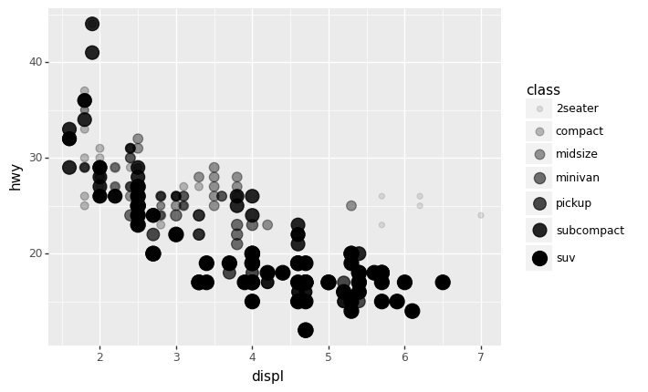
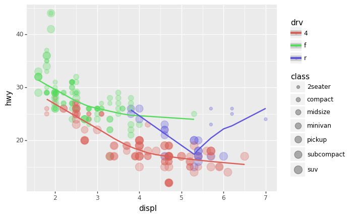

!pip install rpy2==3.5.1
WARNING:rpy2.rinterface_lib.callbacks:R[write to console]: ── Attaching packages ─────────────────────────────────────── tidyverse 1.3.1 ──
WARNING:rpy2.rinterface_lib.callbacks:R[write to console]: ✔ ggplot2 3.4.2 ✔ purrr 1.0.1
✔ tibble 3.2.1 ✔ dplyr 1.1.2
✔ tidyr 1.3.0 ✔ stringr 1.4.1
✔ readr 2.1.4 ✔ forcats 1.0.0
WARNING:rpy2.rinterface_lib.callbacks:R[write to console]: ── Conflicts ────────────────────────────────────────── tidyverse_conflicts() ──
✖ dplyr::filter() masks stats::filter()
✖ dplyr::lag() masks stats::lag()
plotnine
- 데이터 설명
displacement : 자동차의 엔진 크기
hwy : 연료의 효율, 동일한 연료로 얼마나 많이 가는가
기본 2차원의 산점도
| manufacturer | model | displ | year | cyl | trans | drv | cty | hwy | fl | class | |
|---|---|---|---|---|---|---|---|---|---|---|---|
| 0 | audi | a4 | 1.8 | 1999 | 4 | auto(l5) | f | 18 | 29 | p | compact |
| 1 | audi | a4 | 1.8 | 1999 | 4 | manual(m5) | f | 21 | 29 | p | compact |
| 2 | audi | a4 | 2.0 | 2008 | 4 | manual(m6) | f | 20 | 31 | p | compact |
| 3 | audi | a4 | 2.0 | 2008 | 4 | auto(av) | f | 21 | 30 | p | compact |
| 4 | audi | a4 | 2.8 | 1999 | 6 | auto(l5) | f | 16 | 26 | p | compact |
- 산점도를 보고 엔진크기와 연료 효율은 반비례 관계임을 알 수 있다.
산점도 응용 (3차원)
| manufacturer | model | displ | year | cyl | trans | drv | cty | hwy | fl | class | |
|---|---|---|---|---|---|---|---|---|---|---|---|
| 0 | audi | a4 | 1.8 | 1999 | 4 | auto(l5) | f | 18 | 29 | p | compact |
| 1 | audi | a4 | 1.8 | 1999 | 4 | manual(m5) | f | 21 | 29 | p | compact |
| 2 | audi | a4 | 2.0 | 2008 | 4 | manual(m6) | f | 20 | 31 | p | compact |
| 3 | audi | a4 | 2.0 | 2008 | 4 | auto(av) | f | 21 | 30 | p | compact |
| 4 | audi | a4 | 2.8 | 1999 | 6 | auto(l5) | f | 16 | 26 | p | compact |
- class도 함께 표시하면 데이터를 탐색할 때 좀 더 좋을 것 같다.
산점도 + 점크기 변경
산점도 + 투명도 변경
산점도 + 투명도 + 점크기 변경
/usr/local/lib/python3.10/dist-packages/plotnine/scales/scale_size.py:48: PlotnineWarning: Using size for a discrete variable is not advised.
/usr/local/lib/python3.10/dist-packages/plotnine/scales/scale_alpha.py:68: PlotnineWarning: Using alpha for a discrete variable is not advised.
산점도 + 형태
산점도 + 색깔
산점도 + 색깔 + 스무딩
산점도 응용(4차원)
- 해석 : 모든 \(x\)에 대하여 붉은색 점들이 대부분 초록색 점과 보라색 점들에 비해 아래쪽에 위치에 있음 \(\to\) 4륜 구동방식이 연비가 좋지 않음
smooth 추가
구동방식에 따라 smooth 따로 그리기`
(
ggplot(mpg,aes(x="displ",y="hwy")) +
geom_point(aes(color="drv",size="class"),alpha=0.3) +
geom_smooth(aes(color="drv"))
)
구동방식 별로 선의 색깔은 동일시 하되 타입을 변경하기
Summary
- 고차원 변수를 표현할 수 있는 무기는 다양하다. * 산점도 : 점의 크기, 형태, 색깔, 투명도 * 라인플랏 : 선의 형태, 색깔, 굵기
- geom과 mapping만 잘 이용해도 아주 다양한 그래프를 그릴 수 있음.
Pandas에서 column을 선택하는 방법
| X1 | X2 | X3 | |
|---|---|---|---|
| 0 | -0.212599 | 1.101194 | -0.664679 |
| 1 | 0.079671 | -0.414452 | -0.488383 |
| 2 | 0.296181 | 0.454763 | 0.134122 |
| 3 | 1.051856 | -0.070905 | -1.178389 |
| 4 | -0.463166 | 1.295350 | -0.917368 |
방법 1
방법 2
방법 3
- df["X1"]은 serise를 리턴하고 df[["X1"]] 은 데이터프레임을 리턴한다.
방법 4
방법 5
방법 6
참고 : 열이름이 integer인 경우
- 위를 보고 컬럼명이 intiger일경우 loc 와 iloc의 차이를 구별할 줄 알아야한다.
예제 : movie data - 특정 조건에 맞는 열을 선택
actor라는 단어가 포함된 변수들만 뽑기
| actor_3_facebook_likes | actor_2_name | actor_1_facebook_likes | actor_1_name | actor_3_name | actor_2_facebook_likes | |
|---|---|---|---|---|---|---|
| 0 | 855.0 | Joel David Moore | 1000.0 | CCH Pounder | Wes Studi | 936.0 |
| 1 | 1000.0 | Orlando Bloom | 40000.0 | Johnny Depp | Jack Davenport | 5000.0 |
| 2 | 161.0 | Rory Kinnear | 11000.0 | Christoph Waltz | Stephanie Sigman | 393.0 |
| 3 | 23000.0 | Christian Bale | 27000.0 | Tom Hardy | Joseph Gordon-Levitt | 23000.0 |
| 4 | NaN | Rob Walker | 131.0 | Doug Walker | NaN | 12.0 |
| ... | ... | ... | ... | ... | ... | ... |
| 4911 | 318.0 | Daphne Zuniga | 637.0 | Eric Mabius | Crystal Lowe | 470.0 |
| 4912 | 319.0 | Valorie Curry | 841.0 | Natalie Zea | Sam Underwood | 593.0 |
| 4913 | 0.0 | Maxwell Moody | 0.0 | Eva Boehnke | David Chandler | 0.0 |
| 4914 | 489.0 | Daniel Henney | 946.0 | Alan Ruck | Eliza Coupe | 719.0 |
| 4915 | 16.0 | Brian Herzlinger | 86.0 | John August | Jon Gunn | 23.0 |
4916 rows × 6 columns
변수 이름이 s로 끝나는 변수들만 뽑기
| num_critic_for_reviews | director_facebook_likes | actor_3_facebook_likes | actor_1_facebook_likes | gross | genres | num_voted_users | cast_total_facebook_likes | plot_keywords | num_user_for_reviews | actor_2_facebook_likes | movie_facebook_likes | |
|---|---|---|---|---|---|---|---|---|---|---|---|---|
| 0 | 723.0 | 0.0 | 855.0 | 1000.0 | 760505847.0 | Action|Adventure|Fantasy|Sci-Fi | 886204 | 4834 | avatar|future|marine|native|paraplegic | 3054.0 | 936.0 | 33000 |
| 1 | 302.0 | 563.0 | 1000.0 | 40000.0 | 309404152.0 | Action|Adventure|Fantasy | 471220 | 48350 | goddess|marriage ceremony|marriage proposal|pi... | 1238.0 | 5000.0 | 0 |
| 2 | 602.0 | 0.0 | 161.0 | 11000.0 | 200074175.0 | Action|Adventure|Thriller | 275868 | 11700 | bomb|espionage|sequel|spy|terrorist | 994.0 | 393.0 | 85000 |
| 3 | 813.0 | 22000.0 | 23000.0 | 27000.0 | 448130642.0 | Action|Thriller | 1144337 | 106759 | deception|imprisonment|lawlessness|police offi... | 2701.0 | 23000.0 | 164000 |
| 4 | NaN | 131.0 | NaN | 131.0 | NaN | Documentary | 8 | 143 | NaN | NaN | 12.0 | 0 |
| ... | ... | ... | ... | ... | ... | ... | ... | ... | ... | ... | ... | ... |
| 4911 | 1.0 | 2.0 | 318.0 | 637.0 | NaN | Comedy|Drama | 629 | 2283 | fraud|postal worker|prison|theft|trial | 6.0 | 470.0 | 84 |
| 4912 | 43.0 | NaN | 319.0 | 841.0 | NaN | Crime|Drama|Mystery|Thriller | 73839 | 1753 | cult|fbi|hideout|prison escape|serial killer | 359.0 | 593.0 | 32000 |
| 4913 | 13.0 | 0.0 | 0.0 | 0.0 | NaN | Drama|Horror|Thriller | 38 | 0 | NaN | 3.0 | 0.0 | 16 |
| 4914 | 14.0 | 0.0 | 489.0 | 946.0 | 10443.0 | Comedy|Drama|Romance | 1255 | 2386 | NaN | 9.0 | 719.0 | 660 |
| 4915 | 43.0 | 16.0 | 16.0 | 86.0 | 85222.0 | Documentary | 4285 | 163 | actress name in title|crush|date|four word tit... | 84.0 | 23.0 | 456 |
4916 rows × 12 columns
변수 이름이 c 혹은 d로 시작하는 변수들만 뽑고싶다.
| color | director_name | duration | director_facebook_likes | cast_total_facebook_likes | country | content_rating | |
|---|---|---|---|---|---|---|---|
| 0 | Color | James Cameron | 178.0 | 0.0 | 4834 | USA | PG-13 |
| 1 | Color | Gore Verbinski | 169.0 | 563.0 | 48350 | USA | PG-13 |
| 2 | Color | Sam Mendes | 148.0 | 0.0 | 11700 | UK | PG-13 |
| 3 | Color | Christopher Nolan | 164.0 | 22000.0 | 106759 | USA | PG-13 |
| 4 | NaN | Doug Walker | NaN | 131.0 | 143 | NaN | NaN |
| ... | ... | ... | ... | ... | ... | ... | ... |
| 4911 | Color | Scott Smith | 87.0 | 2.0 | 2283 | Canada | NaN |
| 4912 | Color | NaN | 43.0 | NaN | 1753 | USA | TV-14 |
| 4913 | Color | Benjamin Roberds | 76.0 | 0.0 | 0 | USA | NaN |
| 4914 | Color | Daniel Hsia | 100.0 | 0.0 | 2386 | USA | PG-13 |
| 4915 | Color | Jon Gunn | 90.0 | 16.0 | 163 | USA | PG |
4916 rows × 7 columns
| color | director_name | duration | director_facebook_likes | cast_total_facebook_likes | country | content_rating | |
|---|---|---|---|---|---|---|---|
| 0 | Color | James Cameron | 178.0 | 0.0 | 4834 | USA | PG-13 |
| 1 | Color | Gore Verbinski | 169.0 | 563.0 | 48350 | USA | PG-13 |
| 2 | Color | Sam Mendes | 148.0 | 0.0 | 11700 | UK | PG-13 |
| 3 | Color | Christopher Nolan | 164.0 | 22000.0 | 106759 | USA | PG-13 |
| 4 | NaN | Doug Walker | NaN | 131.0 | 143 | NaN | NaN |
| ... | ... | ... | ... | ... | ... | ... | ... |
| 4911 | Color | Scott Smith | 87.0 | 2.0 | 2283 | Canada | NaN |
| 4912 | Color | NaN | 43.0 | NaN | 1753 | USA | TV-14 |
| 4913 | Color | Benjamin Roberds | 76.0 | 0.0 | 0 | USA | NaN |
| 4914 | Color | Daniel Hsia | 100.0 | 0.0 | 2386 | USA | PG-13 |
| 4915 | Color | Jon Gunn | 90.0 | 16.0 | 163 | USA | PG |
4916 rows × 7 columns
face라는 단어가 포함된 변수열을 선택하라.
| director_facebook_likes | actor_3_facebook_likes | actor_1_facebook_likes | cast_total_facebook_likes | facenumber_in_poster | actor_2_facebook_likes | movie_facebook_likes | |
|---|---|---|---|---|---|---|---|
| 0 | 0.0 | 855.0 | 1000.0 | 4834 | 0.0 | 936.0 | 33000 |
| 1 | 563.0 | 1000.0 | 40000.0 | 48350 | 0.0 | 5000.0 | 0 |
| 2 | 0.0 | 161.0 | 11000.0 | 11700 | 1.0 | 393.0 | 85000 |
| 3 | 22000.0 | 23000.0 | 27000.0 | 106759 | 0.0 | 23000.0 | 164000 |
| 4 | 131.0 | NaN | 131.0 | 143 | 0.0 | 12.0 | 0 |
| ... | ... | ... | ... | ... | ... | ... | ... |
| 4911 | 2.0 | 318.0 | 637.0 | 2283 | 2.0 | 470.0 | 84 |
| 4912 | NaN | 319.0 | 841.0 | 1753 | 1.0 | 593.0 | 32000 |
| 4913 | 0.0 | 0.0 | 0.0 | 0 | 0.0 | 0.0 | 16 |
| 4914 | 0.0 | 489.0 | 946.0 | 2386 | 5.0 | 719.0 | 660 |
| 4915 | 16.0 | 16.0 | 86.0 | 163 | 0.0 | 23.0 | 456 |
4916 rows × 7 columns